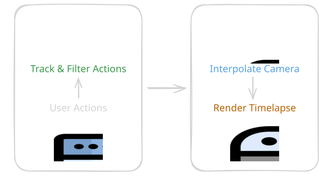

<!DOCTYPE html>
<html lang="en">
<head>
    <meta charset="utf-8" />
    <meta name="viewport" content="width=device-width, initial-scale=1.0, maximum-scale=1.0, user-scalable=no" />

    <title></title>
    <link rel="stylesheet" href="dist/reset.css">
    <link rel="stylesheet" href="dist/reveal.css" />
    <link rel="stylesheet" href="css/slides-extended.css" />
    <link rel="stylesheet" href="dist/theme/black-contrast.css" id="theme" />
    <link rel="stylesheet" href="plugin/highlight/zenburn.css" />
    <link rel="stylesheet" href="plugin/customcontrols/style.css">

    <link rel="stylesheet" href="plugin/reveal-pointer/pointer.css" />


    <script defer src="dist/fontawesome/all.min.js"></script>

    <script type="text/javascript">
        function pageInIframe() {
            return (window.location !== window.parent.location);
        }

        let forgetPop = true;
        function onPopState(event) {
            if(forgetPop){
                forgetPop = false;
            } else if( pageInIframe()) {
                parent.postMessage(event.target.location.href, "app://obsidian.md");
            }
        }
        window.onpopstate = onPopState;
        window.onmessage = event => {
            if(event.data == "reload"){
                window.document.location.reload();
            }
            forgetPop = true;
        }

        function fitElements() {
            const itemsToFit = document.getElementsByClassName('fitText');
            for (const item in itemsToFit) {
                if (Object.hasOwnProperty.call(itemsToFit, item)) {
                    const element = itemsToFit[item];
                    fitElement(element, 1, 1000);
                    element.classList.remove('fitText');
                }
            }
        }

        function fitElement(element, start, end) {

            let size = (end + start) / 2;
            element.style.fontSize = `${size}px`;

            if (Math.abs(start - end) < 1) {
                while (element.scrollHeight > element.offsetHeight) {
                    size--;
                    element.style.fontSize = `${size}px`;
                }
                return;
            }

            if (element.scrollHeight > element.offsetHeight) {
                fitElement(element, start, size);
            } else {
                fitElement(element, size, end);
            }
        }

        document.onreadystatechange = () => {
            fitElements();
            if (document.readyState === 'complete') {
                if (pageInIframe() && window.location.href.indexOf("?export") != -1){
                    parent.postMessage(event.target.location.href, "app://obsidian.md");
                }
                if (window.location.href.indexOf("print-pdf") != -1){
                    let stateCheck = setInterval(() => {
                        clearInterval(stateCheck);
                        window.print();
                    }, 250);
                }
            }
        };
    </script>
</head>

<body>
    <div class="reveal">
        <div class="slides"><section  data-markdown><script type="text/template"><!-- .slide: class="drop" template="" -->
<div class="" style="position: absolute; left: 0px; top: 0px; height: 900px; width: 1600px; min-height: 900px; display: flex; flex-direction: column; align-items: center; justify-content: center" absolute="true">

Milestone Presentation of
# Render Timelapse

Blender Add-on by Henrik Möllmann
</div></script></section><section  data-markdown><script type="text/template"><!-- .slide: class="drop" template="" -->
<div class="" style="position: absolute; left: 0px; top: 0px; height: 900px; width: 1600px; min-height: 900px; display: flex; flex-direction: column; align-items: center; justify-content: center" absolute="true">

## Idea Recap


</div></script></section><section  data-markdown><script type="text/template"><!-- .slide: class="drop" template="" -->
<div class="" style="position: absolute; left: 0px; top: 0px; height: 900px; width: 1600px; min-height: 900px; display: flex; flex-direction: column; align-items: center; justify-content: center" absolute="true">

<video style="object-fit: scale-down" controls=""><source src="files/other/Milestone Video.mp4" alt="" type="video/mp4" /></video>
</div></script></section><section  data-markdown><script type="text/template"><!-- .slide: class="drop" template="" -->
<div class="" style="position: absolute; left: 0px; top: 0px; height: 900px; width: 1600px; min-height: 900px; display: flex; flex-direction: column; align-items: center; justify-content: center" absolute="true">


</div></script></section><section  data-markdown><script type="text/template"><!-- .slide: class="drop" template="" -->
<div class="" style="position: absolute; left: 0px; top: 0px; height: 900px; width: 1600px; min-height: 900px; display: flex; flex-direction: column; align-items: center; justify-content: center" absolute="true">

<split even>


</split>
</div></script></section><section  data-markdown><script type="text/template"><!-- .slide: class="drop" template="" -->
<div class="" style="position: absolute; left: 0px; top: 0px; height: 900px; width: 1600px; min-height: 900px; display: flex; flex-direction: column; align-items: center; justify-content: center" absolute="true">

## Remaining / Roadmap

MVP:

- Focus on **Model editing** user actions
    - Materials & Shading, Modifiers, Geometry Nodes, Scripts, (fix Sculpting)
- **Smooth Animations & Camera** + adaptive **Timing**
- **Demo** for model creation / adaptation incl. all tracked user actions
</div></script></section><section  data-markdown><script type="text/template"><!-- .slide: class="drop" template="" -->
<div class="" style="position: absolute; left: 0px; top: 0px; height: 900px; width: 1600px; min-height: 900px; display: flex; flex-direction: column; align-items: center; justify-content: center" absolute="true">

## Remaining / Roadmap

Stretch Goals:

- **Optimize** against performance degradation compared to no recording
- State-tree in UI-panel to jump to previous/newer state (incl. Operator tracking for workflow analysis)
</div></script></section><section  data-markdown><script type="text/template"><!-- .slide: class="drop" template="" -->
<div class="" style="position: absolute; left: 0px; top: 0px; height: 900px; width: 1600px; min-height: 900px; display: flex; flex-direction: column; align-items: center; justify-content: center" absolute="true">

## Uncertainties

- Performance in **Hour-long Recording + Large Models**
- **Timing** of state sequence in rendered output, also ensemble with Camera
- **Animating large** state changes, e.g. Dyntopo Sculpting
</div></script></section><section  data-markdown><script type="text/template"><!-- .slide: class="drop" template="" -->
<div class="" style="position: absolute; left: 0px; top: 0px; height: 900px; width: 1600px; min-height: 900px; display: flex; flex-direction: column; align-items: center; justify-content: center" absolute="true">

### Questions to Audience

Is there an important (niche) user action that should be tracked?

## 
<style>
:root {
    --r-main-font: "Inter Display";
    --r-code-font: "JetBrainsMono NF";
}
.slide-background-content {
    background-color: black;
}
.muted {
    font-size: .7em;
    color: gray;
}
.slide-number {
    font-size: .5em !important;
}
</style>
</div></script></section></div>
    </div>

    <script src="dist/reveal.js"></script>
    <script src="plugin/notes/notes.js"></script>
    <script src="plugin/markdown/markdown.js"></script>
    <script src="plugin/obsidian-markdown.js"></script>
    <script src="plugin/highlight/highlight.js"></script>

    <script src="plugin/zoom/zoom.js"></script>
    <script src="plugin/math/math.js"></script>
    <script src="plugin/mermaid/mermaid.js"></script>
    <script src="plugin/chart/chart.umd.js"></script>
    <script src="plugin/chart/plugin.js"></script>
    <script src="plugin/customcontrols/plugin.js"></script>
    <script src="plugin/reveal-pointer/pointer.js"></script>


    <script>
        function extend() {
            const target = {};
            for (let i = 0; i < arguments.length; i++) {
                const source = arguments[i];
                for (const key in source) {
                    if (source.hasOwnProperty(key)) {
                        target[key] = source[key];
                    }
                }
            }
            return target;
        }

        function isLight(color) {
            // normalize to rgb(a)
            const optionEl = document.createElement("option");
            optionEl.style.color = color;
            const normalizedColor = optionEl.style.color;

            const match = normalizedColor.match(/(\d+), (\d+), (\d+)/);
            if (!match) return false;
            const [, c_r, c_g, c_b] = match;

            const brightness = ((c_r * 299) + (c_g * 587) + (c_b * 114)) / 1000;
            return brightness > 155;
        }

        const bgColor = getComputedStyle(document.documentElement).getPropertyValue('--r-background-color').trim();

        if (isLight(bgColor)) {
            document.body.classList.add('has-light-background');
        } else {
            document.body.classList.add('has-dark-background');
        }

        // default options to init reveal.js
        const defaultOptions = {
            controls: true,
            progress: true,
            history: true,
            center: true,
            transition: 'default', // none/fade/slide/convex/concave/zoom
            plugins: [
                ObsidianMarkdown,
                RevealHighlight,
                RevealZoom,
                RevealNotes,
                RevealMath.KaTeX,
                RevealMermaid,
                RevealChart,
                RevealCustomControls,
                RevealPointer,
            ],
            allottedTime: "120",

            katex: {
                local: 'plugin/math/katex',
                extensions: ["mhchem"],
            },
            markdown: {
                gfm: true,
            },
            mermaid: {
                theme: isLight(bgColor) ? 'default' : 'dark',
            },
            customcontrols: {
                controls: [
                ]
            },
        };

        if ( pageInIframe() ) {
            defaultOptions.scrollActivationWidth = 5;
        }

        // options from URL query string
        const queryOptions = Reveal().getQueryHash() || {};

        const options = extend(defaultOptions, {"controls":false,"progress":false,"slideNumber":true,"center":true,"transition":"fade","transitionSpeed":"default","width":1600,"height":900,"margin":0.04,"autoPlayMedia":true}, queryOptions);
    </script>

    <script>
      /**
       * KaTeX Equation Numbering Note
       *
       * KaTeX maintains a global equation counter for \begin{equation} environments.
       * When navigating between slides, reveal.js math plugin may re-render math, causing
       * equation numbers to change randomly.
       *
       * Note: Regular $$ blocks don't have equation numbers - only \begin{equation} does.
       *
       * If you experience issues with equation numbers changing:
       * Use manual \tag{} commands: \begin{equation}\tag{1} ... \end{equation}
       */

      Reveal.initialize(options);
    </script>
    <!-- created with Slides Extended reveal.html template -->
</body>
</html>
